Programs & Services
We run targeted programs to support children's safety, education, and
long-term wellbeing.
Education & Scholarships
🎓 Education & Scholarships At Kingdom City Foundation, we believe
that education is the key to breaking the cycle of poverty and
building a brighter, more sustainable future for every child. Many
orphans and underprivileged children have dreams of becoming
doctors, engineers, teachers, and community leaders — but without
access to quality education, those dreams are often cut short.
That’s why our Education & Scholarships Program is at the heart of
our mission. Through the generous support of our donors and
partners, we provide financial aid, school supplies, uniforms, and
mentorship opportunities to children who would otherwise be unable
to attend school.
Residential Care
🏠 Residential Care At Kingdom City Foundation, we believe that
every child deserves a safe, loving, and nurturing place to call
home. Our Residential Care Program provides shelter, protection,
and holistic support for orphaned, abandoned, and vulnerable
children who have nowhere else to turn.Our residential homes are
more than shelters — they are families. Each child is seen, heard,
and loved. We strive to create an atmosphere of belonging, where
children can dream, learn, and thrive just like every other child
deserves.
Health & Nutrition
🩺 Health & Nutrition At Kingdom City Foundation, we recognize
that good health and proper nutrition are the foundation of a
child’s growth, learning, and overall well-being. Many orphans and
vulnerable families in our communities face malnutrition and
limited access to healthcare — challenges that can hinder a
child’s ability to thrive. Our Health & Nutrition Program is
dedicated to ensuring that every child and family we serve enjoys
a healthy, balanced life. You can help build healthier communities
by: Donating food, medical supplies, or hygiene kits. Sponsoring a
feeding or medical outreach program. Partnering with us to expand
access to clean water and healthcare. Together, we can make health
and nourishment a reality for every child and family — because a
healthy life is a hopeful life.
Skills & Livelihoods
💼 Skills & Livelihoods At Kingdom City Foundation, we understand
that empowering individuals with practical skills is one of the
most effective ways to fight poverty and create lasting change.
Our Skills & Livelihoods Program is designed to equip orphans,
widows, and vulnerable youths with the knowledge, tools, and
confidence they need to become self-reliant and financially
independent.
Community Outreach
🤲 Community Outreach At Kingdom City Foundation, we believe that
true change begins at the heart of the community. Through our
Community Outreach Programs, we extend love, hope, and practical
support to underprivileged families, orphaned children, and
vulnerable individuals in urban and rural communities. Food &
Clothing Drives: We organize regular distributions of food,
clothing, and essential supplies to struggling families and
orphaned children. Health & Wellness Campaigns: Our volunteers
collaborate with healthcare professionals to provide free medical
checkups, vaccinations, and health education. Community Clean-Up &
Sanitation: We engage local volunteers to promote hygiene and
environmental cleanliness through periodic clean-up initiatives.
Rural Support Missions: We visit remote villages to deliver relief
materials, educational kits, and spiritual encouragement to those
in need. Emergency Relief Response: During crises such as floods,
pandemics, or natural disasters, we provide rapid humanitarian aid
to affected communities.
Volunteer & Partnerships
🙌 Volunteer & Partnerships At Kingdom City Foundation, we believe
that meaningful change happens when compassionate people come
together with a shared purpose. Our work is powered by a network
of dedicated volunteers, donors, and partners who give their time,
skills, and resources to bring hope and opportunity to children
and communities in need. We welcome collaborations with
individuals, corporate organizations, NGOs, schools, and
faith-based institutions that share our vision. Corporate Social
Responsibility (CSR): Partner with us to fulfill your CSR goals
through impactful community programs. Educational & Skill
Partnerships: Work with us to develop sustainable learning and
training initiatives. Sponsorship Opportunities: Support our
scholarship programs, outreach events, or facility development
projects.
Gallery
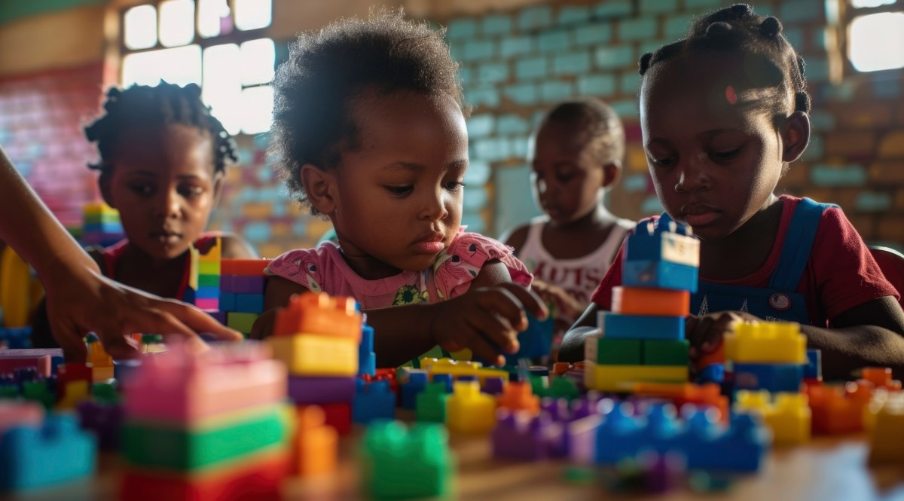
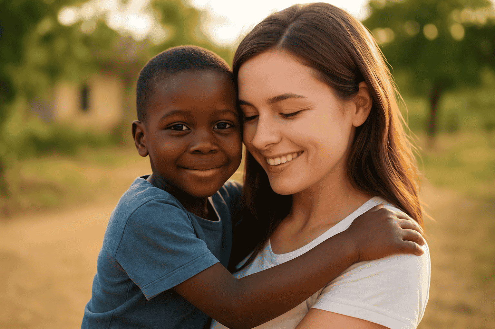
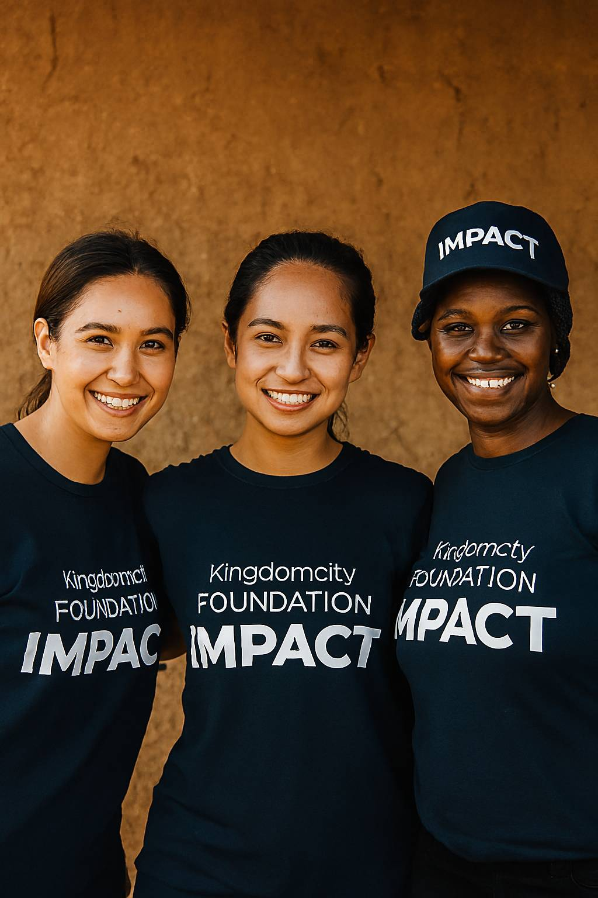
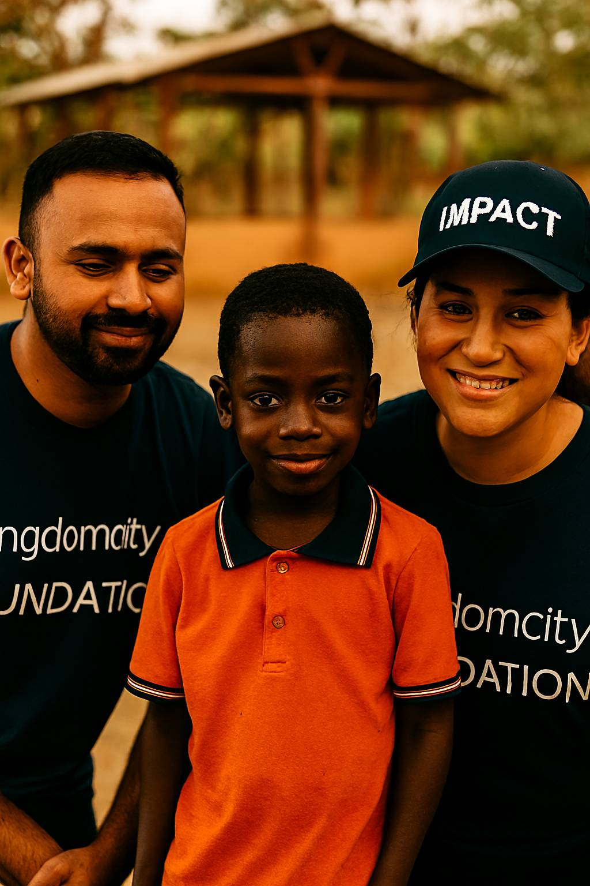
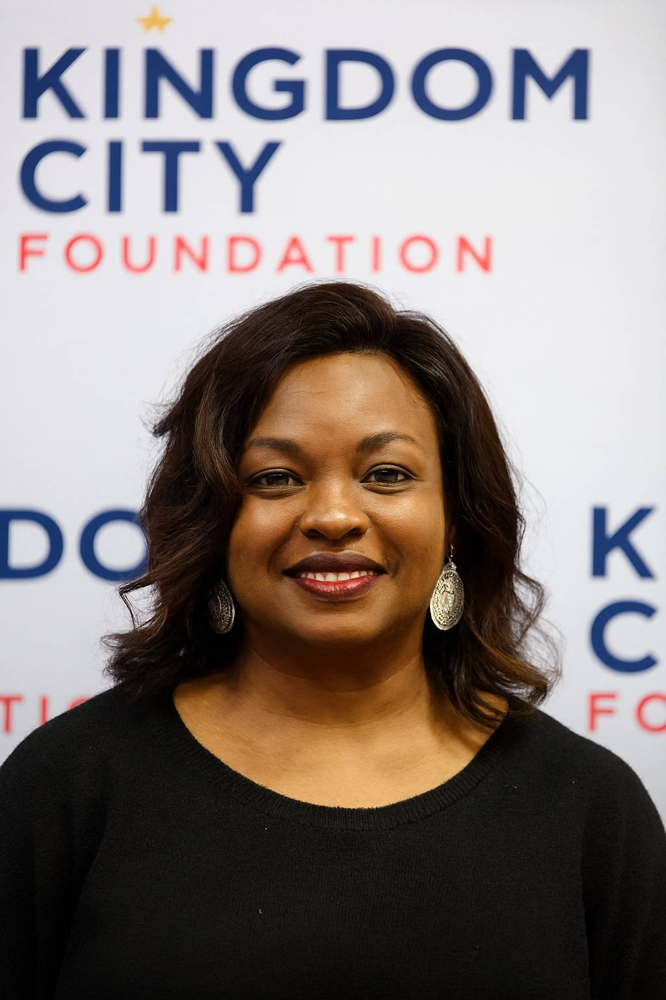
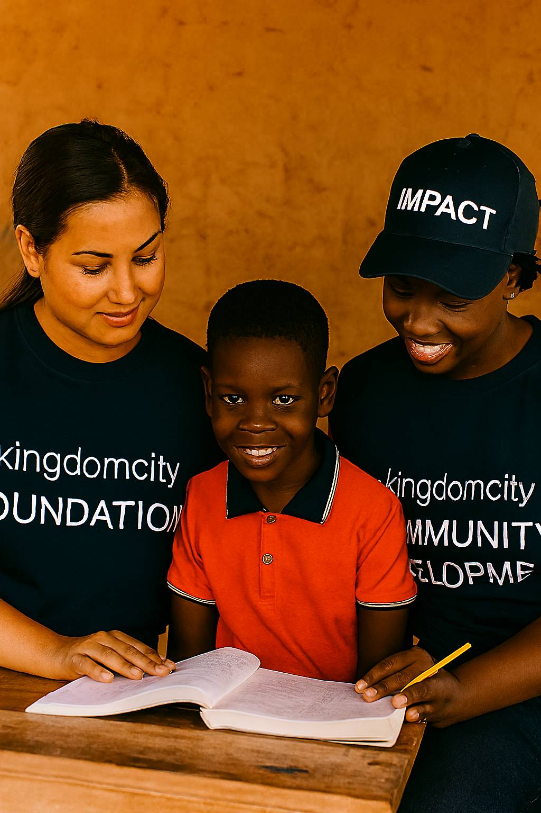
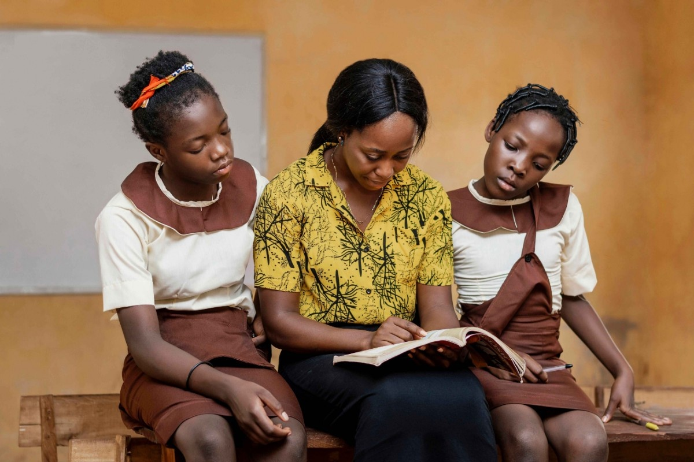
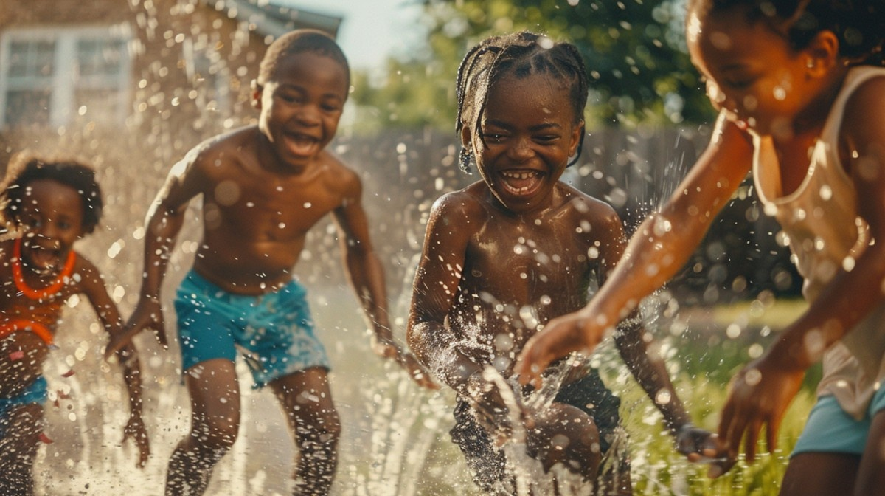
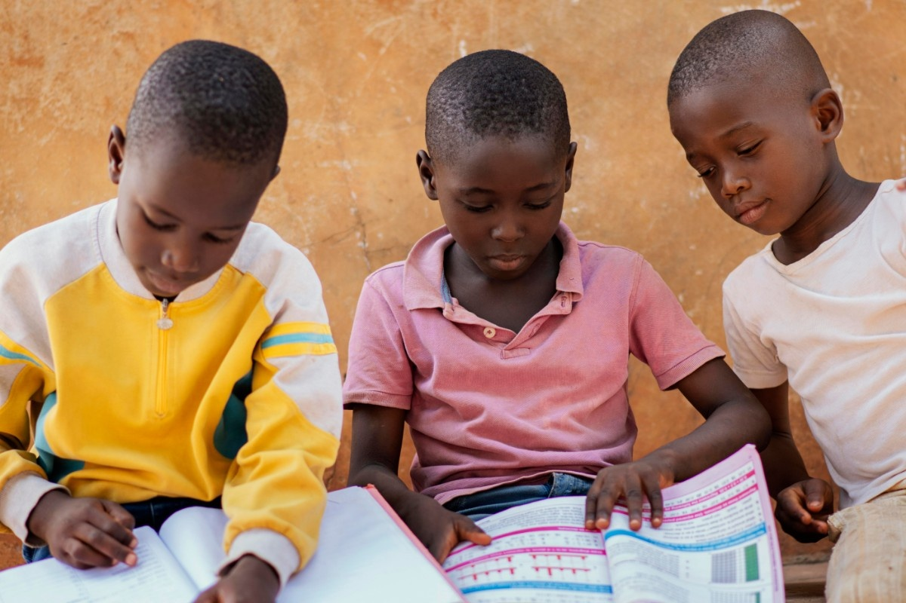
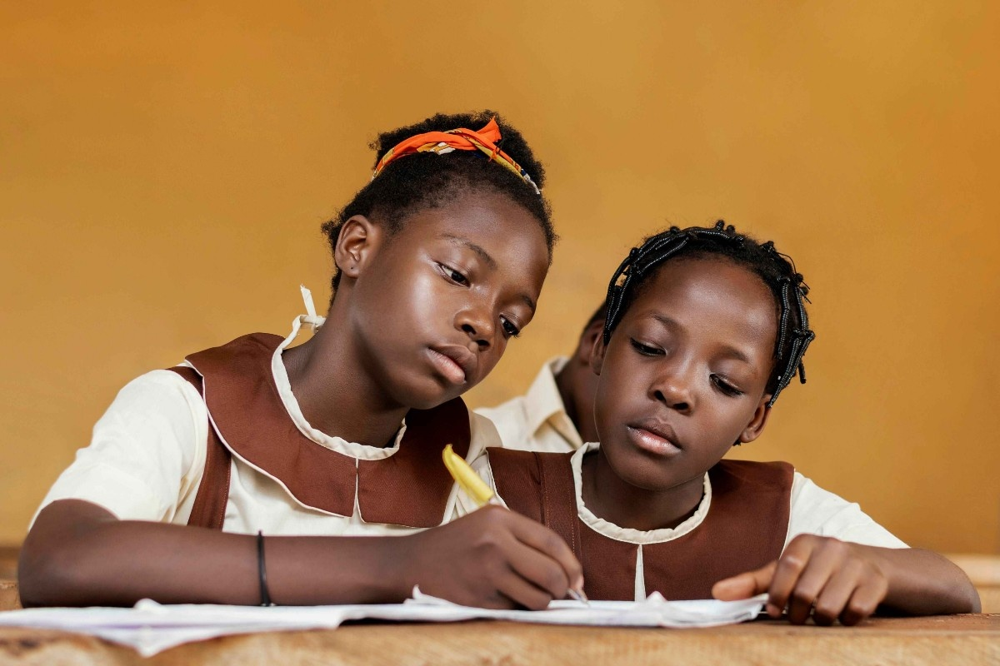
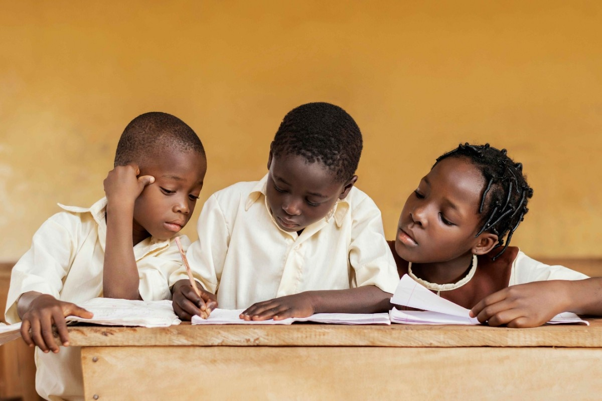
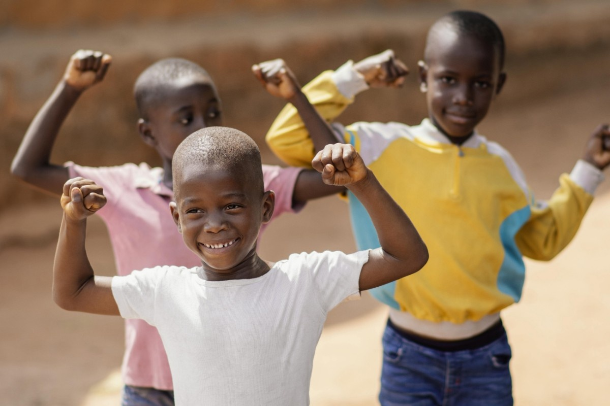